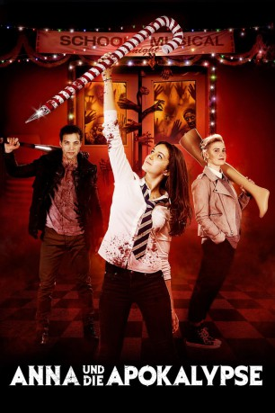

#10976 Anna und die Apokalypse
Alternativ: Anna and the Apocalypse (Englischer Titel)
 
 IMDB-Wertung: 6.1 / 10
IMDB-Wertung: 6.1 / 10  Metascore: 63
Metascore: 63 
Anna (Ella Hunt) kann es gar nicht erwarten, dass sie endlich mit der Schule fertig ist, denn sie will unbedingt aus ihrer kleinen Heimatstadt Little Haven weg. Sie möchte die Welt sehen und etwas erleben, gerade auch weil ihr Vater andere Plänen für seine Tochter hat. Ihr bester Freund John (Malcolm Cumming) hat indes andere Probleme, denn er ist in Anna verliebt und weiß nicht, wie er ihr das sagen soll. Doch all das rückt auf einmal in den Hintergrund, als ihr Leben durch eine Zombie-Invasion auf den Kopf gestellt wird. Anna und ihre Freunde versuchen, sich auf kämpfende – und singende – Weise zu ihrer Schule durchzuschlagen, wo sie angeblich in Sicherheit sein sollen. Allerdings wissen sie nicht, ob ihre Familie und Freunde noch am Leben sind, wenn sie dort ankommen. Ganz abgesehen davon kann Anna sich nicht entscheiden, was in ihrer Situation das größte Übel ist: die Schule, Zombies, oder doch Weihnachtskonzerte?
Jahr: 2017
Dauer: 97 Minuten
FSK: 16
Land: England Studio: Splendid FilmTonspuren: DTS - ,
Untertitel: Deutsch,
Auflösung: 1080p (1920x808) Größe: 4771 MB
Genre: Horror, Komödie, Fantasy, Musical
Regisseur: John McPhail
Drehbuch: Alan McDonald, Ryan McHenry
Soundtrack: Roddy Hart, Tommy Reilly
Darsteller:
- Ella Hunt als Anna Shepherd
- Malcolm Cumming als John
- Sarah Swire als Steph North
- Christopher Leveaux als Chris Wise
- Marli Siu als Lisa
- Ben Wiggins als Nick
 Mark Benton als Tony Shepherd
Mark Benton als Tony Shepherd Paul Kaye als Arthur Savage
Paul Kaye als Arthur Savage- Sean Connor als Graham
- Euan Bennet als Jake
- Ella Jarvis als Katie
- Ruth McGhie als Bea
- Kirsty Strain als Ms. Wright
- Kieran Morris als Santa Boy
- John Winchester als Tibbsy
- Myfanwy Morgan als Penguin Student 1
- John McGeachie als Penguin Student 2
- Janet Lawson als Mrs. Hinzmann
- Tyler Collins als Groom
- Daniel Cahill als Best Man
- Therese Bradley als Julie
- Jackie Bird als Herself
- Calum Cormack als Zombie Santa
- Michael Annis als Headmaster
- Benjamin Storey als Santa Boy
- David Maris als Santa Boy
- Fraser McLoughlin als Santa Boy
- Jack Douglas als Santa Boy
- Matthew Scott als Santa Boy
- Leigh Butler als Alf
- Jake Richardson als Chas
- Callum Johnstone als Snowman
- Ben Bradley als Teacher / Zombie (uncredited)
- David Friel als Paramedic (uncredited)
- Tariqsafdar Hussain als Zombie (uncredited)
- Andrew Kelly als Zombie (uncredited)
Datei: X:\2017(A-F)\Anna und die Apokalypse (2017, FSK16, 1920x808).mkv seit 15.04.2019
Festplatte: HD 2017(A-Z)-2018(A-F)
 Es gibt insgesamt 152 Filme in der Gruppe '2017(A-F)'
Es gibt insgesamt 152 Filme in der Gruppe '2017(A-F)'